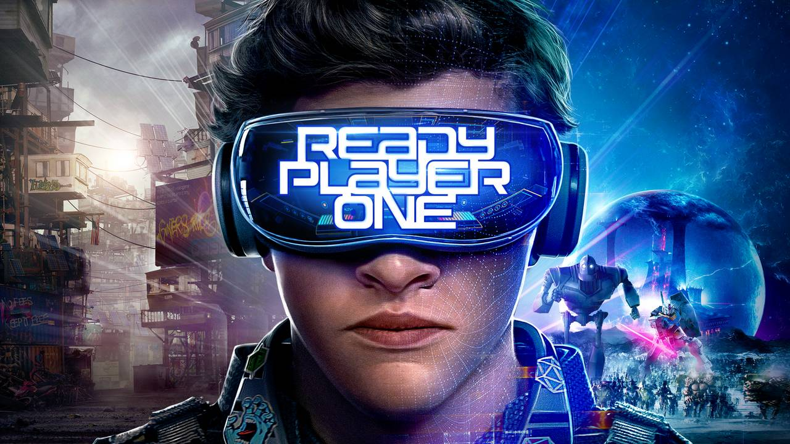

The idea of a Meta-verse has been around for decades and centers around the idea of a virtual, common space where many visitors can be logged in to meet and interact together.
The concept of virtual worlds traces back to the novels Snow Crash(1992) by Neal Stephenson and Neuromancer(1984) by William Gibson.
These works were followed by the creation of MMO (Massive-Multiplayer Online) games where players work as a team from separate computers or consoles.
More modern iterations include such virtual environments as Second Life™, where users interact with one another and explore user-created worlds through their avatars.

Ready Player One is a popular example of how the Metaverse is perceived.
How does it Work?
It is still a game though?
In a true Metaverse, users interact with the created world through their digital avatars from different locations across the globe.
The virtual spaces consist of digital "land" that may either be developed by the users themselves or established as part of the company providing the environment.
Unlike normal video games, however, there are no set goals or plotlines beyond what the users themselves bring to the environment.
Some spaces may in fact be structured as themed games. Others may simply be open spaces for user interactions such as meeting rooms and concert venues.
Second Life is a virtual environment for social interaction across the globe.
How is the Metaverse growing?
Facebook is taking over, right?
Unlike the Internet, the Metaverse is not an open, decentralized structure. Different companies all create their own version which can be accessed only by their own users.
New technologies, such as VR headsets, are drawing more people into the Metaverse.
The popularity of these social venues may lead to a broader shared space that allows access across the different Metaverses.
Through the Blockchain and Cloud Computing, the Metaverse can become untethered from individual companies' control and allow users to remotely interact from across the world and with their own unique digital possessions.
The Metaverse can appear as real or artificial as the participants desire.